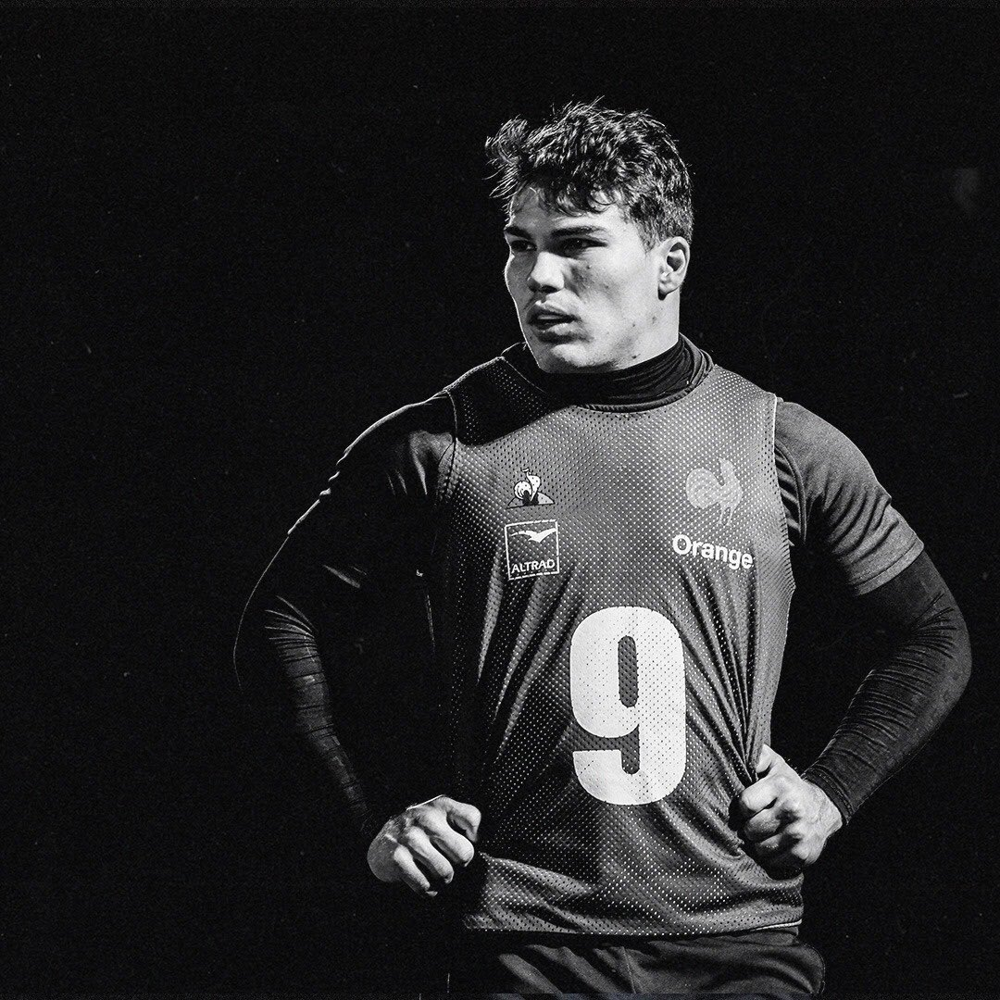
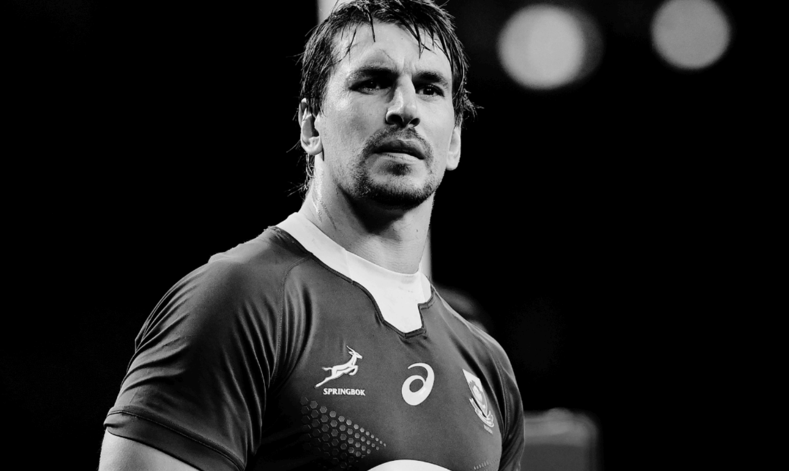
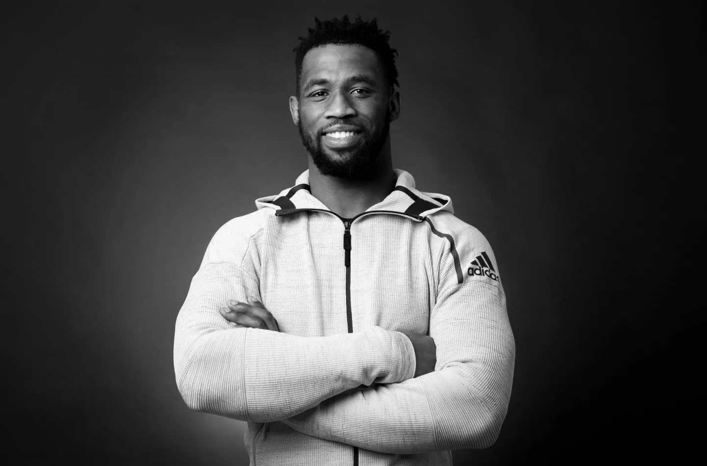
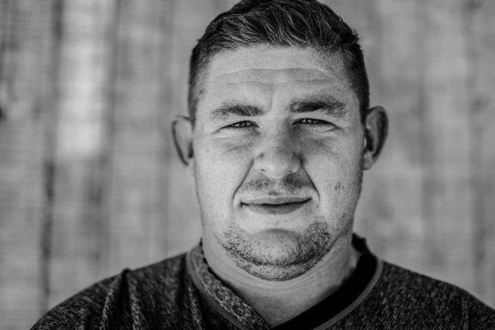

1. Antoine Dupont
Age: 25
Test caps: 35
Nation: France
Club: Toulouse
Bestowed the crown of World Rugby Player of the Year in 2021,
the recent renaissance of French rugby has largely centred around halfback Antoine Dupont.
While France are currently blessed with a raft of talented youngsters who have thrust Les Bleus back to the peak of their powers, few wield the influence Dupont has on both his team and the matches he plays in. Being central to such a significant comeback after years of dormancy deserves recognition, hence why Dupont has claimed top spot in the RugbyPass Top 100.

2.Eben Etzebeth
Age: 30
Test caps: 97
Nation: South Africa
Club: Toulon
Similarly, the impact that experienced Springboks lock Eben Etzebeth provides to South Africa cannot be questioned, especially given his output at international level last year. The towering second rower was at his physically confrontational best as he narrowed in on a century of test matches throughout 2021. Epitomising what it takes to be a hard man at the elite level of the game, no opposition forward was safe from Etzebeth’s wrath as he stamped his authority to remain among game’s the elite locks.

3. Siya Kolisi
Age: 30
Test caps: 63
Nation: South Africa
Club: Sharks
The captain behind South Africa’s World Cup success in 2019, Siya Kolisi’s influence and leadership within the Springboks squad was a significant reason behind their series triumph over the British and Irish Lions. It was also a major reason behind their exhilarating victory over the All Blacks on the Gold Coast, as was his exceptional defensive and breakdown work. It’s hard to imagine if the Springboks would be the world’s top-ranked side without Kolisi, who will no doubt be instrumental in their World Cup title defence next year.

4. Tadhg Furlong
Age: 29
Test caps: 58
Nation: Ireland
Club: Leinster
A mountain of a man who has long been a vital component of Ireland’s recent successes, Tadhg Furlong is among the few players who is a guaranteed selection in any given World XV. That was the case last year, when he – and almost every other player on this list – was named in World Rugby’s Dream Team on the back of another fantastic year in which he started in three British and Irish Lions tests and swept the All Blacks, Brave Blossoms and Los Pumas in November. A strong scrummager and effective ball carrier, Furlong undoubtedly remains the best tighthead prop on the planet.